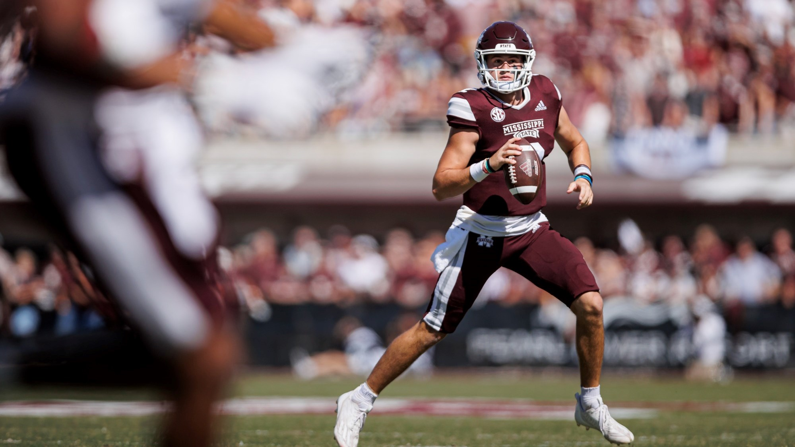
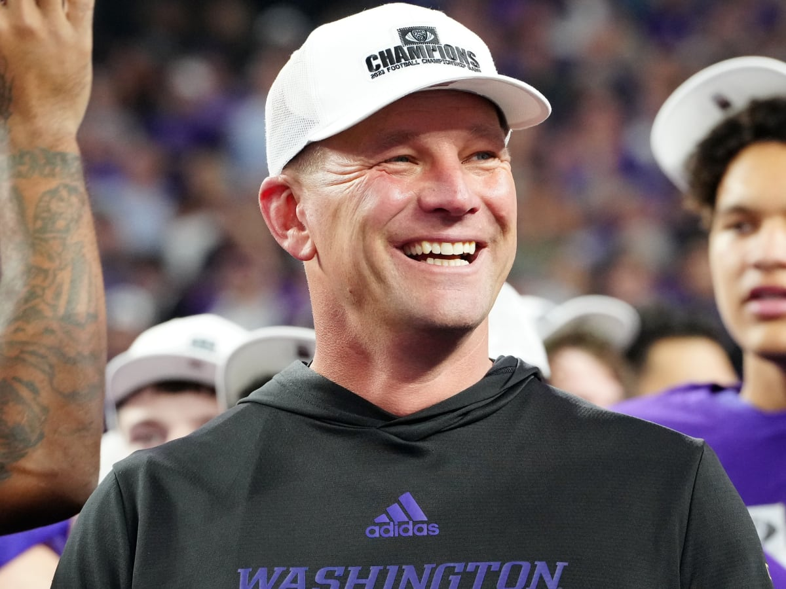

We Need To Talk About the College Transfer Portal
Collegiate sports is an exciting aspect to the college lifestyle and with over 1,000 NCAA schools across Divisions I, II, and III, what could possibly get chaotic about this? The Transfer Portal.
Student-athletes are becoming more athlete-students in this generation of collegiate athletics. Many at the Division I level have aspirations to continue their athletic careers post-college and play professionally. According to the NCAA, only 2% of college athletes (in all sports, male and female, collectively) go on to play professionally, or about 9,000 out of 7.4 million high school student athletes make it professionally. And the percentage of those who maintain their professional status is most likely even less, so the odds are already slim.
The unique thing about every university is that they each have their own culture. When looking at the Ivy League, SEC, Big 10, ACC, or even within each conference as the University of Michigan and Michigan State have two different cultures being within the same state or UCLA and USC being in the same city as each other and having two different cultures academically and athletically.
When high school students look at universities, sometimes they end up not picking one that was the best fit for them or there was a coaching change, or there were broken promises. Whatever the reason, there is the transfer portal to help you get out of situations like this, but I believe that it is being heavily abused by players due to the lack of rules and regulations around it.

One instance of this is Quarterback Will Rogers who has played for two teams in one season and will most likely end up on a third team within the span of three months. In his situation he has been at Mississippi State for four years and is the SEC’s No. 2 all-time passer who decided to transfer to play at the University of Washington, which at the time were in the CFP National Championship against Michigan. He warmed up on the sideline and was a part of the team that ended up being runners-up in the National Championship. Washington’s starting quarterback, Michael Penix Jr. would most likely be entering the draft allowing Rogers to start next year, setting up a great situation.

Nick Saban’s retirement from Alabama sent shockwaves across the collegiate realm, leading Alabama to pick up Washington’s coach, Kalen DeBoer, causing Rogers to enter the transfer portal without playing a single snap of Huskies football. Another part of the reaction caused by Saban’s retirement is the mass exodus of high school recruits and current players leaving Alabama.
As Coach Deion “Prime” Sanders stated earlier this year, “A kid ain't even faithful to his girlfriend. You think (he's) gonna be faithful to a school?” and this brings about a loyalty factor in college. Name, Image, Likeness (NIL) has also made this more challenging to navigate as college athletes can now get paid for sponsorships and other brand deals, encouraging them to stay in college longer and get paid without having to look for a “real” job.
The Transfer Portal can be a great tool if used correctly but when abused, it ruins the point of committing to a college in the first place. We can no longer call this a commitment but an open-relationship if that is how athletes are treating this process. One solution brought up was allowing one transfer within your undergraduate years and one for your graduate years if you are still eligible up to that point. At the end of the day, college is a place to get an education and play a sport, but the education has to come first.
People forget that it is alright to have a fresh start in a new environment, but it is more harmful to have multiple opinions and stimuli within a short span of three months. Limitations need to be put in place not just for the sustainability of the game, but for the growth and development of the athletes themselves, both academically and athletically by not allowing them to take the easy way out and force them to fight for a spot while also getting a degree, building mental toughness for their future endeavors.
Nothing to do with statistics, but since we’re talking about college football, I’ll just throw in one of the most iconic college football commercials of all time.